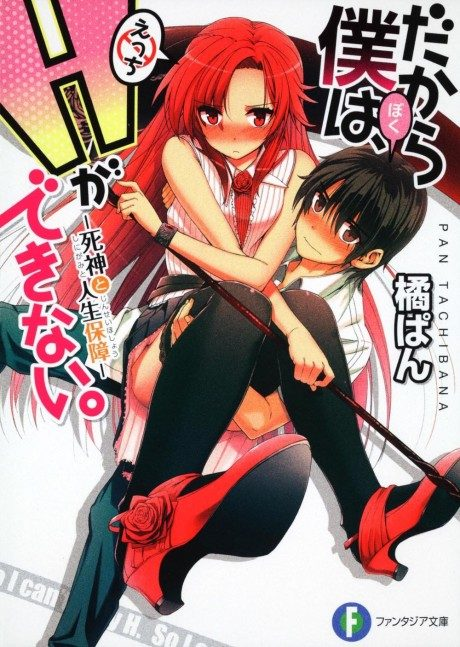
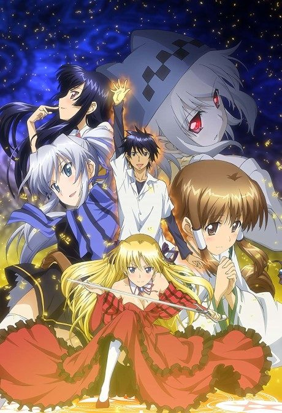

So, I Can't Play H!
だから僕は、Hができない。
Ryosuke makes a deal with Lisara, a grim reaper who needs his energy to stay in the human world.
We haven't found where the anime ends in the light novel yet.
6.0AniList score
—Animeter, no votes yet
12episodes
Rate it or report where you stopped
Anime finished. Where does the story go next?
StatusNo source yet
We looked for where the anime ends in the light novel but found no source we trust yet. The light novel is 72 chapters, finished.
More like So, I Can't Play H!
 Manga Ch. 316.7
Manga Ch. 316.7
 Manga Ch. 716.7
Manga Ch. 716.7
 Original7.9
Original7.9
 Manga Ch. 3167.8
Manga Ch. 3167.8

Manga Vol. 66.4 Unclear6.4
Unclear6.4
 Manga Ch. 486.9
Manga Ch. 486.9
 Unclear6.2
Unclear6.2
 Done7.6
Done7.6
 VN7.1
VN7.1
 Manga Ch. 486.6
Manga Ch. 486.6
 Manga Ch. 256.2
Manga Ch. 256.2